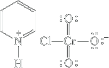

Oxidation of alcohols
Gli alcoli primari sono ossidati ad aldeidi, e in funzioni delle condizioni sperimentali le aldeidi successivamente ad acidi carbossilici. Gli alcoli secondari sono ossidati a chetoni. Gli alcoli terziari non vengono ossidati.
| Primary alcohol |  | [O] ⟶ |  An aldehyde An aldehyde | [O] ⟶ |  A carboxylic acid A carboxylic acid |
|---|---|---|---|---|---|
| Secondary alcohol |  | [O] ⟶ |  A ketone A ketone | ||
| Tertiary alcohol |  | [O] ⟶ | No reaction |
Overoxidation of aldehydes in the presence of water is due to hydration to a 1,1-diol. Oxidation of this diol leads to the carboxylic acid. Water Causes the Overoxidation of Primary Alcohols

In the absence of water, however, aldehydes are not susceptible to overoxidation. Therefore, a water-free form of Cr(VI) has been developed by reaction of CrO3 with HCl, followed by the addition of the organic base pyridine. The result is the oxidizing agent pyridinium chlorochromate, abbreviated as pyH+ CrO3Cl− or just PCC, which gives excellent yields of aldehydes upon exposure to primary alcohols in dichloromethane solvent.
 Pyridine Pyridine (a base) | + | HCl | Pyridinium salt formation ⟶ |  Pyridinium chloride Pyridinium chloride | CrO3 ⟶ | Pyridinium chlorochromate (PCC or pyH+ CrO3Cl−) |
PCC Oxidation of a Primary Alcohol to an Aldehyde:
| CH3(CH2)8CH2OH | pyH+ CrO3Cl−, CH2Cl2 ⟶ | CH3(CH2)8COH 92% |
PCC oxidation conditions are often also used with secondary alcohols, because the relatively nonacidic reaction conditions minimize side reactions (e.g., carbocation formation; Sec- tions 7-2, 7-3, and 9-3) and often give better yields than does the aqueous chromate method. Tertiary alcohols are unreactive toward oxidation by Cr(VI) because they do not carry hydrogens next to the OH function and therefore cannot readily form a carbon – oxygen double bond.
Lo stato di ossidazione dell'etanolo varia nel seguente modo:
Chromic Acid
A reagent commonly used in the laboratory for the oxidation of a primary alcohol to a carboxylic acid is chromic acid, H2CrO4. Chromic acid is prepared by dissolving either chromium(VI) oxide or potassium dichromate in aqueous sulfuric acid:
| CrO3 Chromium (VI) oxide | + H2O | H2SO4 ⟶ | H2CrO4 Chromic acid |
| K2Cr2O7 Potassium dichromate | H2SO4 ⟶ | H2CrO7 | H2O ⟶ | 2H2CrO4 Chromic acid |
A solution of chromic acid in aqueous sulfuric acid is known as the Jones reagent. Because of the low solubility of most organic compounds in water, their oxidation by chromic acid is commonly carried out by dissolving them in acetone and then adding a stoichiometric amount of Jones reagent to complete the oxidation.
Oxidation of 1-hexanol, for example, using chromic acid in the mixed solvent of aqueous sulfuric acid and acetone gives hexanoic acid in high yield.
 1-Hexanol 1-Hexanol | H2CrO4 ⟶ H2O, acetone |  Hexanal Hexanal | ⟶ |  Hexanoic acid" Hexanoic acid" |